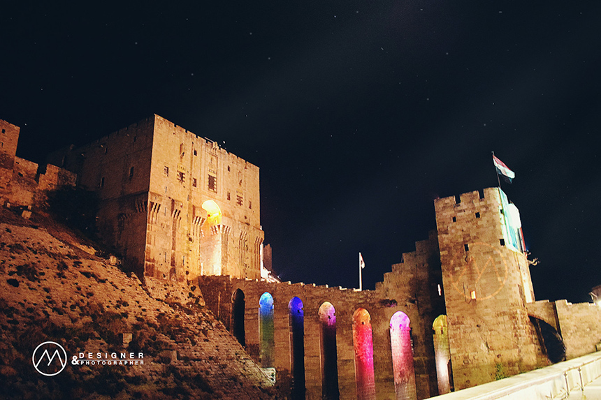
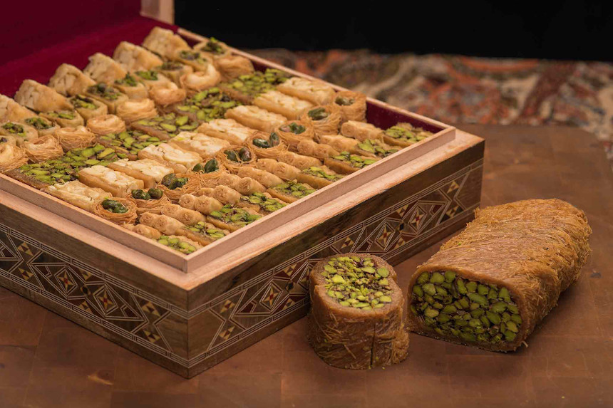

Aleppo is a Syrian city at the northwest part of the country, away 310 km (193 miles) from the capital Damascus, Aleppo
was the largest Syrian city (before the civil war) with an official population more than 4.6 million (2004 estimates).
The original ancient name *Halab* has survived as the current Arabic name of the city, However, the term Ḥalab might be
derived from "milk" related to a folktale of Abraham PBUH who milked his sheep to feed the poor.
Aleppo is one of the oldest inhabited cities in the world so far as it was the capital of Yamhad Kingdom and several
successive civilizations such as Aramaic, Assyrian, Persian, Romanian, Byzantine, and Islamic, in the Abbasid era,
Aleppo emerged as the capital of the Hamdanid Dynasty state, which spread from Aleppo to the Upper Mesopotamia and
Mosul, Its historical significance belongs to being at the end of the Silk Road passing through Central Asia and
Mesopotamia into Europe at North ans Egypt and Africa at South
The trade way shifted to the sea when the Suez Canal was initiated in 1869 and the importance of Aleppo began to decline
slowly, the greatest blows were at the beginning of the 20th century, when the Ottoman Empire fell after thr world war
1, the northern parts of Aleppo (Iskenderun and Antakia) were annexed to Turkey in 1920 by Atatürk and the French
Mandate authorities, whereas the Skes-Picot agreement between UK and France and the separation of Iraq and Syria led
Aleppo to massive depression and deterioration in the economy.
In spite of all these strikes, this city remained the economic capital of Syria, it contains the most important
industrial plants also it's the center of the agricultural areas in Syria, especially the cultivation of cotton
necessary for the flourishing textile factories in the city, the old city of Aleppo has become a World Heritage, the
city was named the capital of Islamic culture for the Arab world in 2006.
Architecture
Aleppo is characterized with mixed architectural styles, having been ruled by, among others, Romans, Byzantines,
Seljuqs, Hamdanid, Mamluks, and Ottomans, There is a relatively clear division between old and new Aleppo. The older
portions of the city, with an approximate area of 160 hectares (0.6 sq mi) are contained within a wall, 5 km (3.1 mi) in
a circle with nine gates, The huge medieval castle in the city known as the Citadel of Aleppo which occupies the center
of the ancient part, in the shape of an acropolis.
Aleppo is a magnificent commercial city, The strategic location of the city on the Silk Road attracted many people of
all races and beliefs to live in and benefit from its location. It contains the largest covered eastern market in the
world, with a total area of up to 16 hectares and a length of up to 16 kilometers, Al-Madinah bazar is an active
commercial area for imported goods, such as silk from Iran, spices and condiments from India, coffee and fabrics from
Damascus, Al-Madinah bazar is also home to local industries such as cotton, agricultural products, and laurel soap which
is famous by name Aleppo soap, The bazar's sections were built in the fourteenth century and named after the names of
trades and professions occupied by, such as wool souq, jewelers souq and so on, besides trade, the market gave traders
and their goods khans located around the markets, khans also took their names from their positions and craft market
located in it, and is distinguished These boxes have beautiful facades fortified with solid wooden doors.
Aleppo has many factors and elements in the field of tourism and archaeological sites are abundant in this city and its
villages such as castles, museums, famous eastern markets, mosques, monasteries, archaeological churches and many summer
resorts and natural forests in the countryside, also a number of international hotels of various levels and
football/basketball clubs and game cities (such as Aleppo's water city), parks and beautiful gardens, cafes and famous
restaurants for its famous known food such as kebbeh and grilled kebab, and held in the city of Aleppo many festivals
and many annual performances, the most important, the annual cotton Carnaval, The Theater Festival, the Festival of
Tourism, Shopping and other industrial exhibitions in addition to the numerous events throughout the city throughout the
year. Many Aleppo houses have been transformed into world-class hotels and restaurants visited by foreign tourists and
those seeking excellence in this ancient city from around the world.
✽ Citadle of Aleppo
Being characterized as enormous, The castle of Aleppo is one of the largest castles in the world. To enter the castle
you have to climb a huge runway that passes through a high gate in the middle, which is based on arches that rise to the
main gate of the castle. The castle sits on a hill in the center of Aleppo and is surrounded by a semi-circular fence
and a number of towers belonging to different civilizations. Inside the majestic castle we find an integrated city of
buildings, churches, mosques, halls, stores, yards, theater, shops and many other monuments. The construction of the
castle goes back to one of Alexander Makdouni's associates who chose that tall hill to be a camp for his soldiers, when
the Romans occupied this country they added to the castle several facilities are still visible today. After many
civilizations and nations followed, after the Islamic conquest in 636 AD, led by Khalid ibn al-Walid and Abu Ubaydah ibn
al-Jarrah, Aleppo wasn't mentioned much by historians but a borderland of the Umayyad and Abbasid states. The great
prosperity the castle witnessed was in the era of al-Zahir Ghazi ibn Salah al-Din al-Ayyubi, who left us important
military architectural monuments that still alive till today

✽ The Great Mosque
The Great Mosque or Umayyad Mosque of Aleppo is one of the largest and oldest mosques in Aleppo, The mosque is located
in the Jaloum neighborhood in the old city and located near to Al-Madenah bazar. It's also known for the presence of
remains of the Prophet Zechariah body pbuh (John the Baptist's father).
The mosque is built on 105 meters in length and about 77.75 meters in width. It is very similar in design and style to
its big brother The Great Mosque of Damascus. The minaret was built within 10 years between 1080 and 1090.
The mosque was renovated in 1159 by Sultan Nur al-Din Zangi after a major fire had destroyed the mosque earlier, but the
mosque was again demolished in 1260 by the Mongols. The Mamluks (1516-1620) carried out several repairs and made several
modifications to the mosque, where the minaret was decorated with kufic sculptures and inscriptions instead of
traditional decorations, The Mamluk Sultan al-Mansur Qalawun replaced the burned preaching platform in 1285 AD, The
courtyard of the mosque and its minaret were restored in 2003, but they were destroyed in April 2013 as a result of the
battles that erupted there in the events of the Syrian crisis.

التركيبة السكانية
وصل تعداد السكان في أواخر العام 2005 الى 2.301.570 مليون نسمة كما أعلن مجلس المدينة
, غالبية سكان حلب هم العرب وأقلية من الأكراد والأرمن والشركس والتركمان وغيرهم, وتتجانس فيها
الإثنيات والأديان منذ القدم لتتمتع المدينة بالتنوع والمشاركة والتعاون بين كافة الأعراق والطوائف من
السكان بشكل رائع
وجميل يعتبر مضرباً للمثل في الشرق الأوسط (قبل الحرب الأهلية السورية).
تقريبا 85% من سكان حلب هم من العرب المسلمين السنة, وسكان حلب من الديانة المسيحية هم التجمع الثالث من
حيث الحجم بعد مدينة
القاهرة و بيروت حيث يقدرون ب
10%
في المنطقة, تحتضن حلب حوالي 45 كنيسة أو مبنى كنسي تنتمي اليه الطوائف المتنوعة فهناك السريان
اللاتين, الموارنة,
الكاثوليك, الأرثوذكس والكلدانيين يتعايشون جميعاً في جو من الود والإخاء, كانت حلب أيضًا موطنًا لإحدى
أغنى المجتمعات المسيحية الشرقية وأكثرها تنوعًا في
الشرق, تاريخياً قطن المسيحيون في أحياء معروفة مثل الجديدة,العزيزية, السليمانية, محطة بغداد, العروبة
والميدان, وإن بدأوا
بالانتشار خارج هذه الأحياء التقليدية مع ازدياد عدد السكان وظهور الأحياء السكنية الحديثة.
يتميز أهل حلب بلهجتهم المحلية المميزة والتي تستعير كثيراً من الكلمات من اللغة التركية نظراً لقرب
المسافة الجغرافية.
الثقافة
حلب مدينة الفن والفنون ولا يمكن ذكر الفن في الوطن العربي دون ذكر حلب فقد كان سيف الدولة يهتم بالعلوم
وقد ازدهر في عصره
علوم مثل الطب, الفلك ,الرياضة, اللغة العربية والشعر حيث اشتهر في عصره عدد من الشعراء المعروفين من
أشهرهم أبو الطيب
المتنبي و أبو فراس الحمداني, كما عُني الحمدانيون بالعلوم العقلية كالفلسفة والمنطق فلَمع نجم عدد
كبير من الفلاسفة
والمفكرين الإسلاميين في بلاط الحمدانيين مثل الفارابي وابن سينا.
تشتهر حلب بالفرق الموسيقية الحلبية التقليدية التي تقوم بغناء الموشحات الدينية والقدود, ويشتهر قاطنو
مدينة حلب بولعهم
بالطرب والغناء والموسيقى وهي
تعتبر عاصمة الطرب الأصيل في الوطن العربي, وقد انطلق منها فنانون كبار ناشرين فنهم بمناطق كثيرة وفي
مختلف التخصصات الفنية
وقد وفد إلى حلب قديماً أهم أعلام الموسيقى العربية وأخذ من تراثها وفنها الكثيرون منهم سيد درويش وغيره
حيث لا يزال كثير من
مطربي هذه المدينة من رواد الطرب الأصيل في الوطن العربي وخاصة في فنون الموشحات والقدود الحلبية
الشهيرة ومن أشهرهم عمالقة
الطرب اليوم الفنان صباح فخري والراحل صبري مدلل وكثيرين في الموسيقى والموشحات والقدود والغناء الأصيل,
كما اشتهرت حلب
بأنها كانت مهد النشيد المعاصر, الذي تميز بالمديح النبوي والالتزام, وكان أشهر رواده الأستاذ حسن حفار,
الأستاذ أبو الجود
محمد منذر سرميني والأستاذ الترمذي المنشد محمد أبو راتب.
صناعات المدينة
✽ الصناعات التقليدية
تم حفظ الصناعات اليدوية العريقة بشكل جيد في أجزاء حلب القديمة كصناعة مشغولات الذهب والصياغة والأحجار
الكريمة و الحفر والنقش على الزجاج والصناعات
النحاسية التقليدية,
اكتسب صابون غار حلب شهرةً عالميةً في الآفاق, ويعتبر أجود وأول نوع من الصابون القاسي ينتج في العالم,
وهو لايزال يصنع في
المصابن (مصانع الصابون) التقليدية التراثية في حلب القديمة وفق الطرق القديمة المتوارثة أباً عن جد,
ولكونها محاطةً بحقول الزيتون والغار والفستق, فقد اكتسبت المدينة باعاً طويلاً في تصدير المنتجات
الغذائية والصناعات
الغذائية التحويلية المغذاة المرتبطة بها وبخيراتها كالزعتر الحلبي الملكي المعروف, وهناك الفستق
المعروف عالميا باسمها الفستق الحلبي و كما
تشتهر حلب بالصناعات
المتعلقة بزيت الزيتون وخاصة الزيتون (العفريني) نسبة إلى منطقة عفرين التي تحوي غابات من أشجار
الزيتون, وهو من أجود أنواع
الزيتون في العالم.
✽ الصناعات الحديثة
ولحب الشعب الحلبي للصناعة فقد
ازدهرت حلب بصناعاتها المختلفة وتجمعاتها الصناعية المنتشرة في ارجاءها ك منطقة العرقوب المشهورة بصوت
نوال النسيج القديمة,ومنطقة الليرمون, الكلاسة, الشيحان وهناك
منطقة الشيخ نجار وهي المنطقة الصناعية الأساسية في المدينةاللتي تحتل مساحة 4412 هكتاراً ليكون أحد
أضخم
الأحياء الصناعية في
المنطقة, يقدر حجم الاستثمارات فيها بأكثر من 2 مليار دولار حتى نهاية عام 2009, وهنالك الكثير من
المشاريع
الجارية لإنشاء فنادق
فخمة, مراكز معارض وعدد من المنشآت الصناعية.
اقتصاد حلب عماده الصناعات النسيجية, الصناعات الكيميائية, الصناعات الدوائية, الصناعات الغذائية
الخفيفة,
الصناعات الكهربائية,
الصناعات الهندسية والسياحية. وهي مركز التصنيع الأساسي في سوريا, باحتوائها على أكثر من 50% من العمالة
الصناعية وأكثر من
نصف حصة التصدير.
المطبخ الحلبي
يتميز المطبخ السوري بشكلٍ عام والمطبخ الحلبي بشكلٍ خاص بتنوع أطباقه, الأطباق السورية غنية بالزيتون,
البندق والفستق, وحلب
بالذات مشهورة بأطباقها اللذيذة وبحب أهلها للقمة الهنيئة, ويُقال (حلب أرض المحاشي والكبب) أو كما
يُقال بين السكان
المحليين (حلب ام المحاشي والكبب), لذلك ليس من المفاجئ بأن يفوز مطبخها بجائزة التذوق العالمية من قبل
أكاديمية الطهي
والتذوق العالمية من فرنسا عام 2007 ولكن في الحقيقة, فإن حلب كانت عاصمةً للطبخ قبل جائزة باريس بكثير,
ربما يعود السبب إلى
تمازج عديد من الإثنيات فيها, الأمر الذي ساعد على تعدد أنواع الأطباق, نظراً لأنها كانت جزءاً من
الدولة العثمانية, فهي
تحتوي على الكثير من الأصناف مثل الكباب, الكبة, اليبرق (محشي ورق العنب), محاشي الباذنجان والكوسا,
اللحمة بالكرز,
السماقية, السفرجلية, يعتبر إفطار الفول المدمس إفطاراً تقليدياً في مدينة حلب, مضافاً إليه الزيت وعصير
الليمون والفلفل
الأحمر, وتعتبر الكبة أحد اختصاصات المطبخ الحلبي الأثيرة وأكثر أكلة محبوبة من قبل السكان, ابتكر
الحلبيون أكثر من 17 نوعاً
من أنواع الكبب المشهورة في الديار الشامية.
حلب أيضاً مركزُ هام لصناعة الحلويات, والتي تتميز باحتوائها على نسب كبيرة من الزبدة والسكر, مثل
المبرومة, سوار الست,
البللورية, بالإضافة لأصنافٍ أخرى مثل المامونية, الشعيبيات, المشبك, الزلابية, غزل البنات, وتتضمن معظم
هذه الحلويات الجوز
والقشطة والفستق الحلبي الشهير.